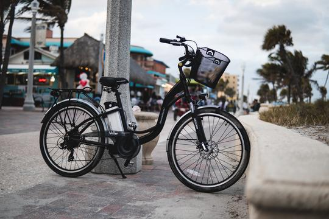
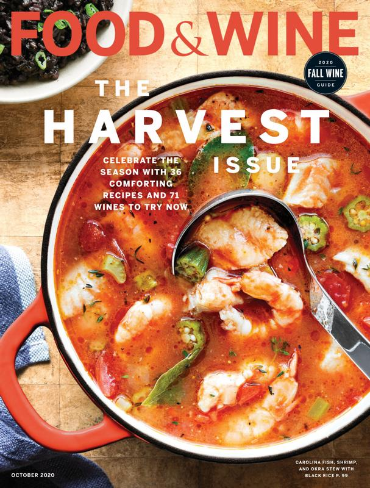

Do Photographers Need a College Degree?
By Michelle Ecker on March 19 2021.
If you want to become a professional photographer,
Cruiser Electric bikes can come in all shapes and sizes and perfect for all age groups from teens to grandparents. That's the beauty of an electric bike. With the added assistance, everyone can enjoy the beauty of the great outdoors.
Food and Wine is a magazine that is published for lovers of good food. Featured in the magazine are recipes by professional chefs, detailed wine ratings, and reviews of new and established restaurants around the world.
